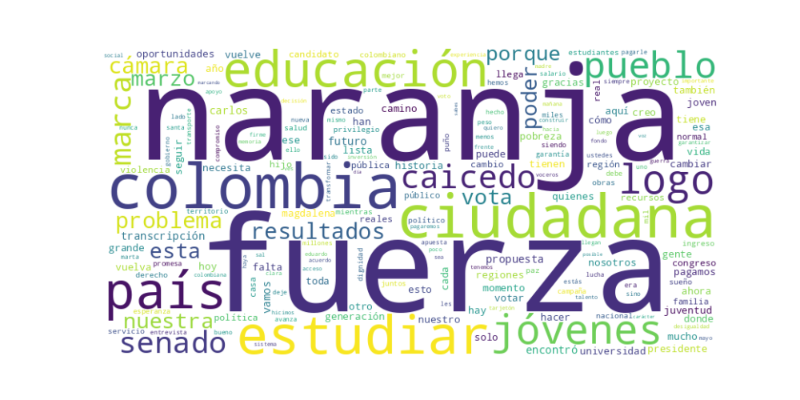

Seguidores: 63,214
Reporte de Análisis de Comunicación: Candidato Carlos Caicedo
1. Perfil de Comunicación: El candidato emplea un estilo de comunicación predominantemente informal y cercano, adaptado al formato de redes sociales. Su lenguaje es popular y directo, evitando tecnicismos para conectar con un público amplio. Combina un tono propositivo y testimonial ("ya lo hicimos en el Magdalena") con un llamado urgente y movilizador ("Este 8 de marzo no es una fecha cualquiera"). Se presenta como un líder con experiencia práctica, contrastando su gestión con "discursos vacíos" de otros. La comunicación es visualmente reiterativa (logo naranja, puño en alto) y ritmada, con uso frecuente de frases cortas y hashtags.
2. Temas Principales: 1. Educación: Es el tema central y transversal. Lo aborda como la solución estructural para la pobreza, la desigualdad y la violencia. Propone concretamente "Te pagamos por estudiar", un salario educativo. Ejemplo: "La educación transforma vidas. Y cuando es para todos, transforma el país." 2. Regionalismo / Anticentralismo: Critica constantemente el gobierno desde Bogotá y promueve la autonomía y inversión en las regiones. Ejemplo: "Colombia no puede seguir gobernándose desde un escritorio en Bogotá, de espaldas a sus territorios." 3. Resultados vs. Promesas: Establece una dicotomía fundamental entre su gestión (con obras y resultados tangibles) y la política tradicional de "discursos" y "promesas incumplidas". Ejemplo: "Aquí no hay promesas. Hay obras. Hay resultados." 4. Dignidad y Futuro: Enmarca la elección como una decisión moral entre un "presente de olvido" y un "futuro de dignidad". Ejemplo: "Se trata de decidir entre seguir soportando el abandono de siempre o dar el paso firme hacia un futuro con dignidad..." 5. Juventud: Vincula la educación directamente con el futuro de los jóvenes, presentándolos como la generación que "hará grande a Colombia" y como víctimas del abandono actual. Ejemplo: "A los jóvenes de Colombia siempre les han dicho: 'estudien para salir adelante'. Pero nunca crearon las condiciones para hacerlo."
3. Tono y Sentimiento Dominante: El tono general es crítico y confrontacional contra el "centralismo", los "políticos tradicionales" y el "abandono", pero simultáneamente esperanzador y propositivo. Genera un sentimiento de urgencia ("Este 8 de marzo definimos el rumbo del país") y confianza basada en resultados demostrados ("ya lo hicimos"). Hay un componente de lucha y resistencia ("Ciénaga no se rinde. Ciénaga lucha") que busca inspirar acción.
4. Palabras Clave de Poder: * "Resultados" / "Obras": Antagonista principal de "discursos" y "promesas". * "El poder vuelve al pueblo" / "al territorio": Frase central que encapsula su propuesta de descentralización y soberanía popular. * "Te pagamos por estudiar": Es la propuesta concreta y distintiva, convertida en hashtag y mantra. * "Futuro con dignidad": Objeto último de la decisión electoral. * "Logo naranja" / "Puño en alto": Símbolos visuales y de acción repetidos constantemente para generar identidad y instrucción de votación. * "Generación que hará grande a Colombia": Define y eleva a su audiencia objetivo principal.
5. Conclusión Estratégica: La estrategia de comunicación del candidato Carlos Caicedo está diseñada para posicionarlo como la alternativa práctica y con experiencia frente a una política tradicional considerada vacía y centralista. Habla principalmente a jóvenes, habitantes de regiones (particularmente el Caribe) y votantes frustrados con la falta de resultados concretos. Su discurso busca evocar un sentimiento de capacidad de cambio propio ("ya lo hicimos"), urgir a una acción electoral como acto de conciencia y lucha, y movilizar el voto alrededor de una propuesta única y tangible (salario educativo). En esencia, construye una identidad política basada en la gestión regional exitosa, contrastada con el fracaso del centralismo, y ofrece un camino concreto (educación pagada) como solución nacional.
Reporte de Análisis: Estrategia de Comunicación Política en Redes Sociales Candidato: Carlos Caicedo / Fuerza Ciudadana
El éxito del candidato se basa en una fórmula dual: combina la cercanía emocional y la identidad local (a través de la música, símbolos y origen regional) con una propuesta política única y tangible, presentada como la solución estructural a los problemas del país. No es solo discurso; es una oferta concreta ("Te pagamos por estudiar") enmarcada en una narrativa de progreso y orgullo personal. El patrón es identidad + propuesta concreta + llamado emocional a la acción.
El discurso apunta principalmente a una audiencia joven o de mediana edad, potencialmente desencantada con la política tradicional, que habita en regiones fuera del centro del país (especialmente la Costa Caribe) y que valora tanto el progreso material tangible (educación gratuita y remunerada) como el reconocimiento identitario. Se dirige a quienes se sienten "abandonados" y buscan una alternativa concreta y un líder que hable "como ellos".
La clave fundamental del poder de su discurso es la conversión de una política pública compleja en una oferta simple, repetible y emocionalmente cargada. "Te pagamos por estudiar" no es solo una propuesta; es una promesa de transacción económica directa y un símbolo de justicia y oportunidad. Lo que lo diferencia del discurso tradicional es su capacidad de empaquetar un programa de gobierno en un hashtag de Instagram, combinándolo con una estética de autenticidad regional y cercanía cultural. Su estrategia no es debatir ideologías, sino vender una solución específica y presentarse como el único con el manual para implementarla. Es política como producto concreto, dirigido con precisión a las aspiraciones y resentimientos de su audiencia objetivo.

Caption: Un atardecer samario con Carlos Eduardo desde el Camellón de la bahía. Santa Marta te quiero ya pueden escucharla Por Spotify
Likes: 288 | Comentarios: 7 | Reproducciones: 3,706
Ver en InstagramCaption: En entrevista para @EmisoraAtlantico : ¿La forma real de superar la pobreza en Colombia? Educación. Desde la básica primaria hasta la universidad, sin excusas. Propongo un Gran Acuerdo Nacional que garantice acceso, calidad y permanencia para todos. Porque un país que educa, progresa. Sé parte de nuestro equipo de voluntarios y acompaños en este sueño por la educación. #CaicedoPresidente #TePagamosPorEstudiar
Likes: 133 | Comentarios: 10 | Reproducciones: 1,780
Ver en InstagramCaption: 🎓 #TePagamosPorEstudiar | La propuesta que pone a la juventud colombiana en el centro. Estuve en un encuentro con voceros de campaña, presentandoles nuestra propuesta para transformar Colombia. Jóvenes de todo el país ya la conocen y la llevaran a sus comunidades. Porque estudiar es la mejor inversión del país para superar la pobreza, la desigualdad, la informalidad laboral, la violencia, el reclutamiento de los grupos armados, la migración 🇨🇴 Esta propuesta es tuya. Llévala a tu comunidad. Súmate al grupo de voceros y construye desde la educación: seguridad, prosperidad y desarrollo para Colombia. https://equipodevoceros.caicedopresidente.com.co/ #TePagamosPorEstudiar | #CaicedoPresidente
Likes: 305 | Comentarios: 16 | Reproducciones: 4,732
Ver en Instagram